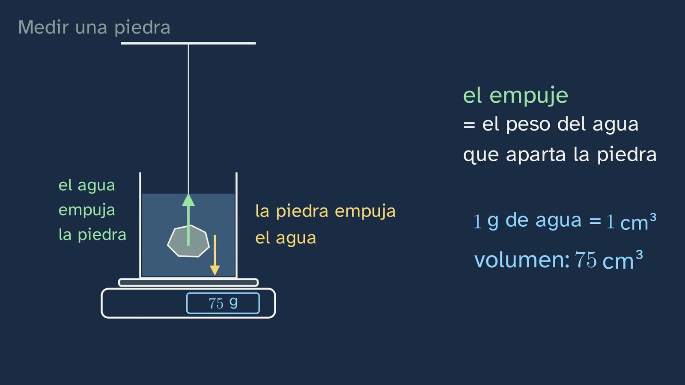
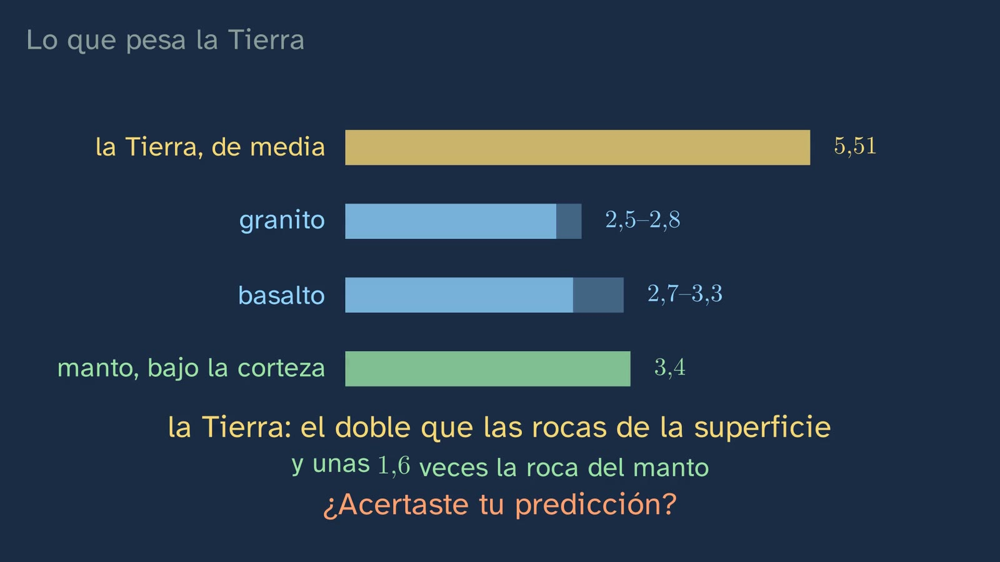

The Earth is too heavy
In a nutshell
The class opens the topic with a question few textbooks ask out loud: how do we know what is at the centre of the Earth, if the deepest borehole goes only just past twelve kilometres? It is a lab class. Students learn to measure the density of a stone with a kitchen scale and a glass of water (the hydrostatic balance), to check the setup with a control (half a kilo of steel should give almost 8) and to say how wrong they could be: a measurement is not a number, it is an interval. Then they see how the whole Earth was "weighed", with the Schiehallion mountain (1774) and Cavendish's balance (1798), and find that the Earth is twice as dense as the rocks on its surface: inside, it cannot be like the outside. It closes with the "hollow Earth", a reasonable hypothesis in 1692 and a baseless belief today, to tell one from the other.
Objective. By the end, students will be able to measure the density of a rock with a scale and a glass of water, estimate how wrong they could be, and explain why the Earth's average density, twice that of its rocks, shows that inside it is not like the outside.
For readers outside Spain: the Bachillerato is the last two years of secondary school (ages 16–18). The video is in Spanish, with English subtitles; the images on this sheet come from the video and keep their Spanish text. In Spain the decimal separator is a comma: 2,67 means 2.67.
Curriculum
Spain's Royal Decree 243/2022, Biology, Geology and Environmental Sciences (consolidated text in the Official State Gazette, BOE, checked on 28/09/2026). Our translation of the official Spanish text.
| Element | What the decree says | Where the class works on it |
|---|---|---|
| Core knowledge (block D) | "Structure, composition and dynamics of the geosphere. Direct and indirect methods of study." | The whole class: average density, an indirect method |
| Core knowledge (block A) | "Laboratory or field experiments: design, planning and execution. Testing hypotheses. Experimental controls." | The hydrostatic balance and the steel control |
| Core knowledge (block A) | "Methods for analysing scientific results: organisation, representation and statistical tools." | How wrong you could be: a measurement as an interval |
| Core knowledge (block A) | "Reliable sources of information: searching, recognising and using them." | The hollow Earth: what measurement proves it, who made it and where was it published? |
| Specific competence 2 | "To locate and use reliable sources, identifying, selecting and organising information, evaluating it critically and checking its truthfulness, in order to answer questions about the biological, geological and environmental sciences independently." | The hollow Earth |
| Specific competence 3 | "To design, plan and carry out research projects following the steps of scientific methodologies, taking the available resources realistically into account and seeking ways to collaborate, in order to investigate aspects of the biological, geological and environmental sciences." | Measuring density |
| Criterion 2.2 | "To check and justify the truthfulness of information related to the subject's knowledge, using reliable sources and taking a critical and sceptical attitude towards information without a scientific basis such as pseudosciences, conspiracy theories, unfounded beliefs, hoaxes, etc." | The hollow Earth, against the measured density |
| Criterion 3.1 | "To ask questions, make predictions and formulate hypotheses that can be answered or tested using scientific methods…" | The prediction: denser, equal or less dense than a stone? |
| Criterion 3.3 | "To carry out experiments and collect quantitative and qualitative data on biological, geological and environmental phenomena, selecting and using the appropriate instruments, tools or techniques correctly and precisely." | The hydrostatic balance |
| Criterion 3.4 | "To interpret and analyse the results of a research project, using mathematical and technological tools when necessary, recognising their scope and limitations…" | How wrong you could be |
What students bring from lower secondary (ESO): the layers of the Earth (crust, mantle and core) and that density is mass divided by volume. In Spain, the methods for studying the Earth's interior are taught in Biology and Geology in the fourth year of ESO, where it is an elective subject: some students have never seen them.
How the class is built
Video chapters
About fourteen minutes, in nine chapters. It is the topic's first lab class: first the phenomenon and the measurement; the explanation of what is inside comes in classes 2 to 5.
| Chapter | What happens | Why this way |
|---|---|---|
| What we'll see | Nil, in a lab coat in a geology lab, introduces the topic and its five classes; two are lab classes. | Knowing where you are and where you're going organises what you learn. |
| The question | The Kola borehole (12,262 m in 1989) against a radius of 6,371 km: on an apple 8 cm wide, less than a tenth of a millimetre. | The scale makes the problem felt: nobody has been there, and yet we draw it. |
| What you already know | Draw the layers and ask how we know; and the prediction: is the Earth denser than a stone, equal or less dense? | Retrieving what they know, and committing to an answer before measuring. |
| Measuring a stone | The hydrostatic balance step by step: buoyancy and why the scale shows the volume; the example 200/75 = 2.67; the two setup mistakes; and the steel control (500/64 = 7.8). | A fully worked example; the experiment's mistakes in plain view; and the idea of a control. |
| How wrong you can be | What it is for (two stones of 2.67 and 2.69: different?), the calculation with 74 and 76 g, the interval, and granite against basalt. Random and systematic errors (a bubble, pores). | The statistical tools of block A, with a problem that makes them necessary. |
| What the Earth weighs | Schiehallion and Hutton (1774–1778), Cavendish (1798) and today, 5.51 g/cm³, against the rocks on the surface. Did you get it right? | Two different methods, the same conclusion: that is how an indirect measurement earns trust. |
| The hollow Earth | Halley (1692): London's compass needle moved 17° in just over a century, and his hypothesis of layers with gaps. The measurements left it with nowhere to stand. | The typical mistake, taken apart with its history, and the difference between a hypothesis and a baseless belief. |
| Try it yourself | The measurement at home, with the control and three repeats, and a mission: the densest stone. | What is safe, the student does. |
| Practice | Recap, three exercises and an open question. | Spaced practice: the solutions open the next class. |

A plan for a 50-minute lesson
Designed for the lab. Without a lab, do the measurement as a demonstration with a single scale, or set it for home ("Try it yourself").
| Minutes | What to do |
|---|---|
| 0–5 | No video: draw the layers of the Earth and bet whether the Earth is denser than a stone, equal or less dense. |
| 5–17 | Video from 0:00 to 7:32 (up to "What the Earth weighs"): the hydrostatic balance, the steel control and the interval. |
| 17–35 | The activity: the school's rocks, with the control and three measurements of each. |
| 35–40 | Video from 7:32 to 10:03: what the Earth weighs. Compare their rocks with 5.51. |
| 40–50 | Discussion: can they tell their rocks apart, given the error? Was their prediction right? The hollow Earth (10:03 to 11:54) if there is time; if not, for homework with the worksheet. |
Typical mistakes and how they are handled
- "The Earth weighs what its rocks weigh", and its extreme version, the "hollow Earth". The Earth's average density (5.51 g/cm³) is twice that of the granite on its surface (about 2.65) and almost twice that of basalt (about 3.0). An Earth made of granite, without counting the compression of its own weight, would have half its mass. The hollow Earth was a serious hypothesis by Halley in 1692; today it is a baseless belief, because its supporters leave out the measurements.
- "A measurement is an exact number." It is an interval. With a scale that shows whole grams and a 200 g stone, the density comes with a margin of about four hundredths (200/74 = 2.70; 200/76 = 2.63); with a 100 g stone, twice that. Two stones of 2.67 and 2.69 cannot be told apart with that scale; a typical granite (2.65) and a compact basalt (3.0) can. But, as the video warns, the ranges overlap (there are granites and basalts of 2.7 or 2.8), so density alone does not always tell you which rock it is.
- Setup mistakes. If the stone touches the bottom or the sides, or if the thread is tied to a pencil resting on the glass, the scale also weighs the stone and the reading shoots up. The thread is held from outside.
- Systematic errors. A bubble stuck to the stone makes it look bigger and less dense; a porous rock (volcanic barbecue stone, brick, sandstone) soaks up water and you no longer know what volume you are measuring. A clue: if the reading goes down while you wait, something is wrong. Hence compact rocks.
- "Indirect methods are guesses." They are measurements. Class 2 comes back to it: several independent measurements that agree weigh more than a single sample.

Questions and solutions
Stop and think (in the video)
- Draw the layers of the Earth you learned. How do you know they are like that? Almost all students draw crust, mantle and core; almost nobody can say how we know. That is what the topic is about.
- The whole Earth, on average: denser than a stone from the street, equal or less dense? Denser: twice as dense.
- The steel pushes aside 64 g of water: what does half a kilo give? 500/64 = 7.8 g/cm³, close to iron's 7.87: the setup works.
- If the Earth is twice as dense as the rocks we walk on, where is the weight? Deeper down. If the surface rocks are no denser than 3.3 (the video rounds it: "under three") and the average is 5.5, there must be something above 5.5 inside.
From the student worksheet
- Why, when you lower the hanging stone into the water, does the scale show its volume? The water pushes the stone up with a force equal to the weight of the water it pushes aside (Archimedes' principle), and the stone pushes the water down with the same force: that is what the scale feels. So it shows the grams of water the stone pushes aside, and since each gram of water takes up one cubic centimetre, that number is the stone's volume in cm³.
Practice (the solutions open class 2)
- A 180 g stone pushes aside 62 g of water. Density, interval, and what rock could it be? 180/62 = 2.90 g/cm³, between 180/63 = 2.86 and 180/61 = 2.95. A basalt (or a gabbro): granite does not go above 2.8.
- What fraction of the radius is the deepest mine, about 4 km? 4/6371 = 0.063 %: one part in 1,600.
- Explain with a number why the Earth cannot be hollow. Its average density is 5.51 g/cm³, twice that of its surface rocks; a hollow Earth would be less dense than its rocks, not more.

Keep thinking. Can you be sure of something nobody will ever see? It has no textbook answer. It helps to tell apart three kinds of confidence: seeing something with your own eyes, measuring it indirectly with a method checked against a control, and several independent methods agreeing. The class offers one case of each: the stone on the scale, the steel as a control, and Schiehallion and Cavendish reaching the same conclusion by different routes.
A classroom activity
The density of the school's rocks (about 20 minutes within the 50-minute plan, or a whole session if more samples are measured; in groups of three or four).
Materials per group: a scale (a 1 g kitchen scale; with small samples, better 0.1 g), a plastic container of water, strong thread, a stand to hang the stone from outside the scale, half a kilo of steel (one piece or nuts tied together) and three or four compact rocks or minerals from the school's collection.
- Prediction (criterion 3.1). Each group orders its samples from least to most dense, just by looking at them and weighing them in the hand, and writes it down.
- The control (block A: experimental controls). Weigh the steel dry; put the container of water on the scale and tare it; lower the hanging steel in, without touching the bottom or the sides, and read. It should come out at almost 8 (iron, 7.87). If not, check the setup before going on.
- The measurement (criterion 3.3). The same with each sample, three times, taking it out and putting it back in; write down the three readings and the average.
- The error (criterion 3.4). Using the scale's last digit, work out the interval of each density (mass divided by the reading plus one, and by the reading minus one). Can two samples be told apart? Only if their intervals do not overlap.
- Discussion. Was the prediction right? Compare with the reference values: quartz 2.65, calcite 2.71, pyrite 5.02 and magnetite 5.18 g/cm³ (Handbook of Mineralogy). Is any sample as close to the Earth's average density (5.51) as an iron mineral?
Safety: minerals containing lead, arsenic or mercury (galena, for example) are handled with gloves, without making dust, and hands are washed afterwards; pyrite must be dried well after immersion. No porous rocks: they spoil the measurement.
Sources
- Royal Decree 243/2022, consolidated text (BOE): https://www.boe.es/buscar/act.php?id=BOE-A-2022-5521.
- The Kola borehole, 12,262 m in 1989 (EarthDate, University of Texas): https://www.earthdate.org/episodes/kola-superdeep. The deepest mine, about 4 km (Guinness World Records): https://www.guinnessworldrecords.com/world-records/66169-deepest-mine.
- The Earth's radius and average density (NASA, Earth Fact Sheet): https://nssdc.gsfc.nasa.gov/planetary/factsheet/earthfact.html.
- Schiehallion and Cavendish (APS News, 2008): https://www.aps.org/apsnews/2008/06/1798-cavendish-weighs-world. Cavendish, H. (1798). Experiments to determine the density of the Earth. Philosophical Transactions 88, 469–526, doi:10.1098/rstl.1798.0022.
- The hydrostatic balance (University of Valencia): https://www.uv.es/uvweb/physics/en/demonstrations-catalogue/fluids/medida-de-la-densidad-con-la-balanza-hidrostatica-metodo-de-arquimedes-galileo-1286053998293/DemoExp.html?id=1286110989231.
- The densities of the reference minerals: Handbook of Mineralogy (Mineralogical Society of America): quartz, calcite, pyrite and magnetite.
- Safety with toxic minerals: US National Park Service, Conserve O Gram 11/11 (2006): https://www.nps.gov/subjects/museums/upload/11-11_508.pdf.
- Lower secondary (ESO): Royal Decree 217/2022, consolidated text (BOE): https://www.boe.es/buscar/act.php?id=BOE-A-2022-4975 (fourth-year Biology and Geology, an elective under article 9.2).
- Rock densities (Geophysics for Practicing Geoscientists, CC BY 4.0): https://gpg.geosci.xyz/content/physical_properties/tables/density_igneous_rocks.html. Mantle rock below the crust, PREM model (EarthScope): https://data.earthscope.org/app/products/portal/emc_model_viewer.html?id=EMC-PREM.
- Halley and the hollow Earth (Royal Society): https://royalsociety.org/blog/2023/10/magnetic-halley/. Halley, E. (1692). Philosophical Transactions 16, 563–578.
- Real photos of the rocks by James St. John, CC BY 2.0 (Wikimedia Commons).
About this class
GinCol Lab is a free science channel for curious minds. Nil is an illustrated character with a synthetic, computer-generated voice that does not imitate any known person; the script and this sheet are written by an AI (Claude, by Anthropic) and reviewed by a person before publishing. The photos of the rocks are real; the scale setup and the historical instruments are drawn. This English version was translated by the same AI. If you spot a mistake, tell us: learning also means correcting.
This sheet is published under a Creative Commons Attribution 4.0 licence: you can copy it, adapt it and use it in your classroom, crediting GinCol Lab.
How to cite this sheet
GinCol Lab (2026). The Earth is too heavy. GinCol Lab teacher sheet: Biology, Geology and Environmental Sciences · 1st year of Bachillerato · Inside the Earth · Class 1 of 5. https://gincollab.github.io/aula/en/biologia-geologia-ccaa/t01-c1/. CC BY 4.0.
GinCol Lab teacher sheet · CC BY 4.0 · Source and errata